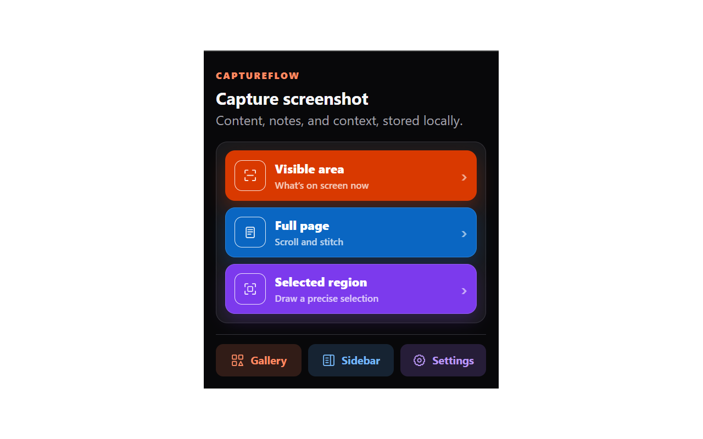
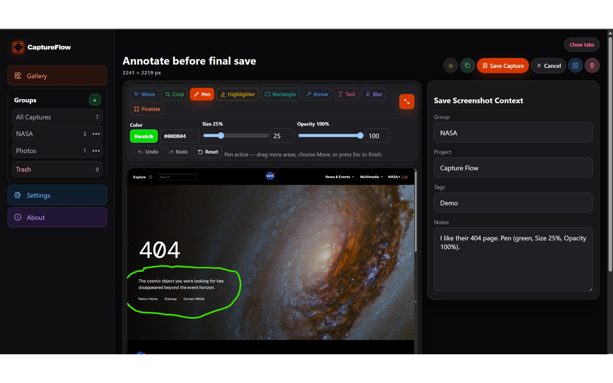
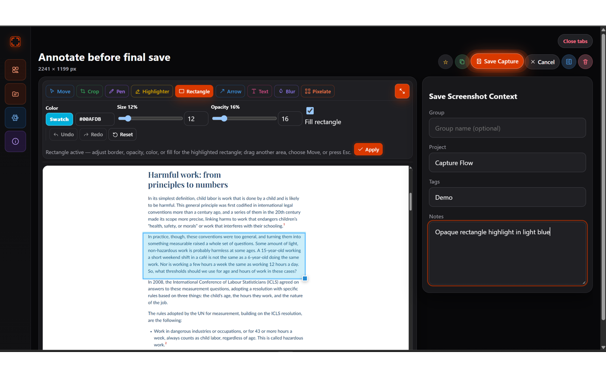
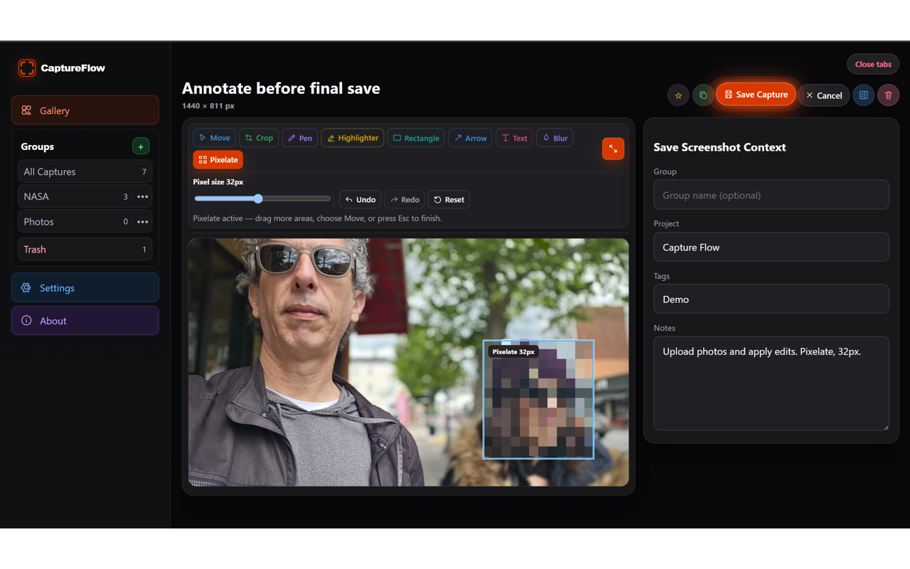

CaptureFlow
CaptureFlowGroups and autocomplete
Create groups and quickly reuse group, project, and tag values from the Gallery or editor.
CaptureFlow 0.2.0 · Private by design
CaptureFlow turns screenshots and imported images into a searchable local library with annotation, notes, tags, projects, groups, downloads, and optional Windows backup copies—without requiring an account or cloud service.

New in version 0.2.0
Create groups and quickly reuse group, project, and tag values from the Gallery or editor.
Position and resize text, rectangles, and arrows before applying them without replacing the original image.
Capture substantially longer pages with improved handling for repeated fixed and sticky elements.
Product tour




One connected workflow
Save the visible area, a selected region, a full page, or an existing local image.
Crop, draw, highlight, add shapes and text, or obscure sensitive details.
Add notes, tags, projects, and groups, then search, filter, download, or move captures to Trash.
Official resources
Get help, understand local data handling, troubleshoot common issues, or review CaptureFlow's public product information.